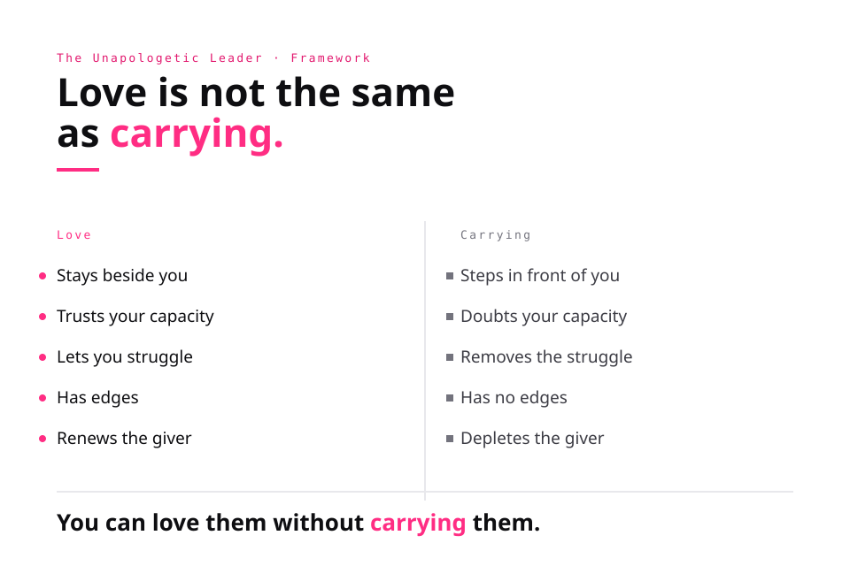
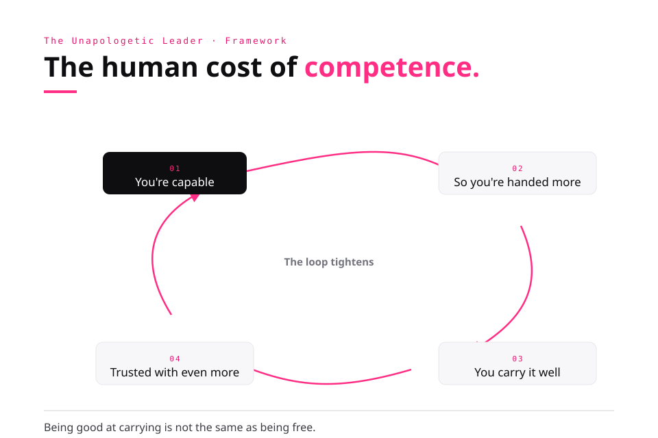
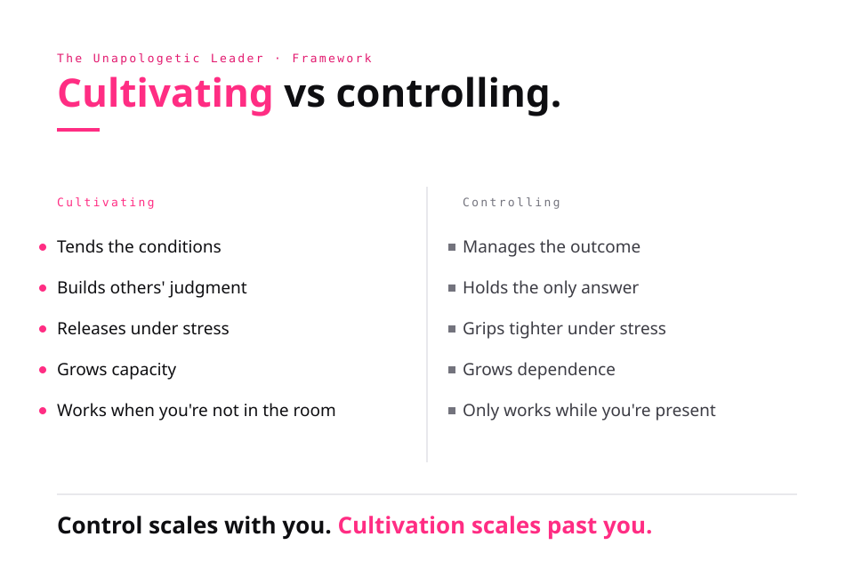

A new language for the women who hold everything together.
Keynotes for high-capacity women who have spent years carrying responsibilities, emotions, and outcomes that were never theirs to hold. Not leadership advice. Not self-help. Finally, words for what you have been carrying.
Award-winning operator and main-stage speaker — from SMX to leadership rooms. The talks land because they're built from the work, not the theory.
The category
Most women weren't taught leadership. They were taught to carry.
The most capable woman in the room is usually the one holding the most that was never hers to hold. The emotional weather of the team. The thing no one else remembered. The outcome everyone assumed she'd carry because she always has. We call it leadership. A lot of it is over-functioning, and it has a cost no one names out loud.
These talks give a room language for what they've been doing silently for years. Not productivity tips. Not lean-in. The line between caring and carrying, the human cost of being the competent one, the permission people are actually waiting for, and what changes when you stop controlling and start cultivating. Audiences don't leave motivated. They leave able to name something they couldn't name before.
You can care deeply without carrying it all.
Signature keynotes
Four talks. One throughline.
The Difference Between Love and Carrying™
Most women were taught that love means sacrifice, that showing up for people means absorbing their weight. So they carry. Teams, families, outcomes, emotions that were never theirs. This keynote draws the line most people have never been given: the difference between caring for someone and carrying them. One builds connection. The other builds resentment and burnout dressed up as devotion. The room leaves knowing exactly what they've been holding, and what they're allowed to set down.
You can care deeply without carrying it all.

The Human Cost of Competence™
The more capable you become, the more people hand you. Competence quietly turns into a sentence. You become the one who always handles it, until handling it is the only version of you anyone can see, including you. This talk names the trap high-capacity people live inside and the toll it takes that never shows up on a performance review. It's for the person everyone relies on and no one worries about.
Competence is a gift. Over-responsibility is not.

Permission
Most people aren't waiting for a strategy. They're waiting for permission. To stop, to choose, to lead in their own voice, to want what they actually want. This keynote is about the permission we keep waiting for someone else to grant, and the moment you realize it was always yours to give. Equal parts relief and challenge, it sends a room home with the one thing no framework can hand them.
The permission you've been waiting for was always yours to give.
Cultivating vs. Controlling™
Many leaders, often the most well-meaning ones, build dependency without realizing it. They hold every decision, fix every problem, become the bottleneck they complain about. That's control wearing the mask of care. This talk is about the harder, quieter discipline of cultivating: building capacity in other people instead of reputation in yourself. It's how leaders, parents, and founders build something that keeps working when they leave the room.
Great leaders don't build dependency. They build capacity.

Also on the roster
Two more I bring to leadership rooms.
01
Leadership in Motion
Making conscious decisions in an unknown world. Why most failures are decision failures, and how leaders steer instead of drift.
02
Unapologetic Leadership
Identity, voice, and self-trust. Leading without erasing yourself to fit a room that was not built for you.
AI & marketing keynotes
Looking for the search, AI, and infrastructure-era marketing talks? That work lives at the Lab. Same operator, different stage.
Main stages, award stages, and rooms full of leaders and operators. A decade of speaking, distilled into talks people remember.
SMX · Search Marketing ExpoTEDxJanes of DigitalTogether DigitalFireside conversationsAward stages
Formats
Three ways to bring it in.
Keynote
Keynote
30 to 60 minutes. One big idea, made memorable, with a framework the room can repeat.
Workshop
Workshop
Half or full day. Over-functioning, the carrying line, permission, and cultivating leaders, worked through hands-on.
Fireside
Fireside / Panel
Conversation, Q&A, and the honest version of how the work actually happens.
For producers & hosts
Topics & talking points.
Booking a podcast, panel, or keynote? Pull from these. Built for leaders, high-capacity women, and the people everyone relies on.
Caring vs. carryingThe human cost of competenceOver-functioning & burnoutThe permission no one grants youCultivating vs. controllingLeading without erasing yourselfBuilding capacity, not dependency
You can care deeply without carrying it all.
Competence is a gift. Over-responsibility is not.
The permission you've been waiting for was always yours to give.
Great leaders don't build dependency. They build capacity.
Bring it to your stage
Let's give your room something to repeat.
Keynotes, workshops, and fireside conversations. Tell me about your audience and the moment they are in.